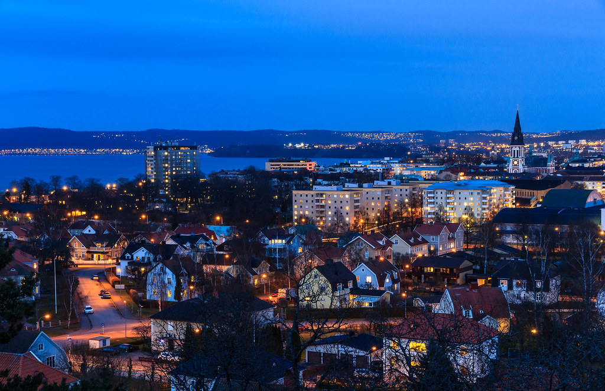

My Favorite Places...

...to eat:
- STUK (the city's best Pizza Bianca)
- Ombrelli (the city's best Cannelloni)
- Ciro (the city's best Arancini)
...to fika:
- Espresso House Östra Storgatan (ofc, because this is where I work)
- STUK (the city's best hot chocolate!!)
- Olgas Crêpes & Gelato
...to visit:
- Asecs and Östra Storgatan + adjacent streets (for shopping)
- Spira, Elmia, or Jönköping's Theater (for various performances)
- The many nature reservations around the city, like Stadsparken (for hiking and enjoying nature)